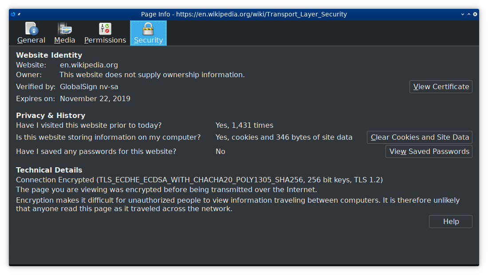
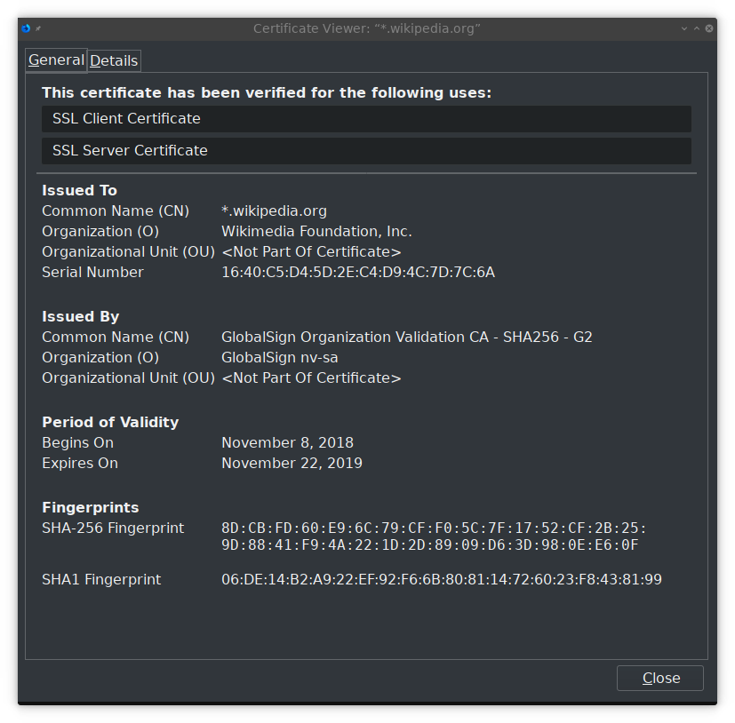
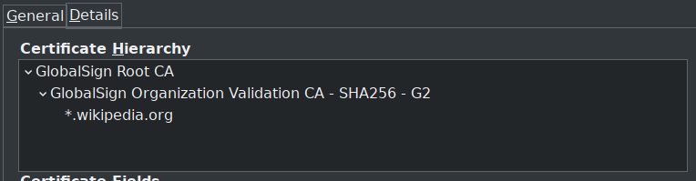
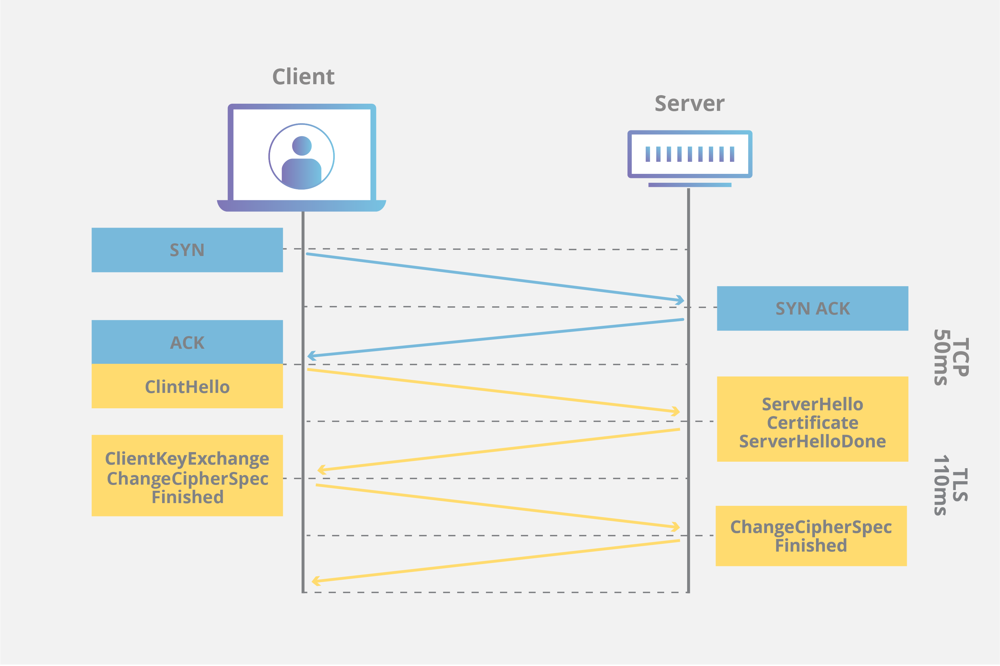

CMPUT 404
Web Applications and Architecture
Part 14: TLS
Created by
Abram Hindle
(abram.hindle@ualberta.ca)
and Hazel Campbell (hazel.campbell@ualberta.ca).
Copyright 2014-2019.
TLS
- Transport Layer Security
- Transport Layer: works on top of TCP/UDP
- Security
- Formerly called SSL
- HTTP inside of TLS is called HTTPS
TLS versions
- SSL 2.0: 1995-2011
- SSL 3.0: 1996-2015
- TLS 1.0: 1999-2020
- TLS 1.1: 2006-2020
- TLS 1.2: 2008-
- TLS 1.3: 2018-
Security
- Identity
- Who are you talking to?
- Privacy
- Who can hear what you're saying?
- Authenticity
- Is what you're hearing really coming from the person you think you're talking to?
Identity
- If I go to bank.com how do I know that I'm really talking to bank.com?
- Without TLS, I don't: my connection can be intercepted by IP, TCP, and DNS attacks...
- Without TLS it's relatively easy to intercept connections meant for a webserver and serve them yourself.
- Example: Evil WiFi cafe! I could set up an evil WiFi cafe, where people come, sit down, connect to my "secure" WiFi. Then when someone tries to make a connection to someplace interesting like their bank, my WiFi router can redirect their packets to my own web server! I could make it look just like their bank's website, allowing them to enter their username and password.
- Evil WiFi cafe could also simply intercept DNS requests and respond with the address of a fake bank webserver instead.
- This is not limited to WiFi: anyone with access to a network where TCP/IP and DNS traffic is going accross, such as one of the many networks that make up the internet, can do the same or similar attacks.
- It's not limited to routers either: just sitting next to someone at a wifi cafe would allow you to perform similar attacks
TLS: Identity
- With TLS I can ensure the server I'm connected to is the server I meant to connect to.
- This is done with certificates.
- A certificate works like an ID card.
- The server sends a certificate with its domain name (called a "Common Name") and a big number called a public key.
- The certificate also includes other details, such as who made it, for example, "Bank Inc."
- Okay so the server hands me their certificate, it has a big number and it says it's the bank, but how do I know a fake websitie didn't just make a big number and claim to be the bank?
- The certificate also has one crucial thing: a cryptographic signature.
- The signature is produced by someone else, and only matches one public key and domain name.
Signed Certificates
- The certificate's signature is unique to that certificate.
- If you change the public key or the domain name, the signature won't match anymore.
- The certificate's signature also comes from a specific entity that made that signature.
- It tells us who signed it, and only they could have produced that signature.
- No one else can pretend to have signed the certificate, or the signature won't match.
Cryptographic Signatures
- I make a private key and a public key as a part of a cryptographic signature algorithm.
- I keep my private key secret, known only to me.
- I give away my public key to the whole world so everyone knows it's my public key.
- I make signatures by combining my private key and some other information I want to sign. In this case its the banks domain name and the bank's different public key.
- You can check my signature by using my public key (which I already gave you) and combining it with the signature and information that's been signed to check it.
Certificate Authority (CA)
- A certificate authority uses their private key to sign the bank's certificate.
- The bank sends their certificate to you so you can check it.
- You have the CA's public key.
- You combine it with the banks certificate.
- Now you know:
- The bank's domain name
- The bank's public key
- That the CA says those are really the bank's
- But how does the CA know?
- The bank sends their certificate when you connect.
- The CA's public key is already on your computer. It came with your OS or your browser when you downloaded it.
Identity Problems
- You don't have the CA's public key
- There's no way to know if the bank's domain name and public key are correct :(
- The CA is evil
- There's no way to know if the bank's domain name and public key are correct :(
- The CA's private key got leaked
- There's no way to know if the bank's domain name and public key are correct :(
- The bank didn't send a signature from a CA
- There's no way to know if the bank's domain name and public key are correct :(
Identity Problems
- Usually these are combatted by the browser makers:
- Only allowing trusted CAs
- Removing bad or leaked CAs
- Not allowing you to view sites without a valid signature from a good CA
- Checking lists of known certificates to make sure someone didn't get a second certificate to pretend to be the bank (Certificate Transparency)
- Checking lists of known bad certificates and certificates that have been "revoked" (CRLs)
- Ensuring the public key is the same as the last time you connected to the site (HPKP)
Certificate and CA in browser
  {kind=link}
{kind=link}
{kind=link}
Identity to Privacy
- Once the identity of the server is established, and you know the server's public key is really for the server you want to be talking to,
- TLS can provide privacy and authenticity.
Privacy
- Hiding the content being transmitted back and forth from eavesdropping, snooping, man-in-the-middle, etc.
- We want to prevent anyone but us and the server we want to send our information to from being able to read anything exchanged between us and the server
- Passwords
- Credit card numbers
- Search terms
- Exact URLs
- Cookies
- Conversations
- Grades
- Interests
- Habits
- Content
- Uploads
- Most information that gets transmitted either way
Authenticity
- Seperate from privacy
- Every message is hashed to ensure it really came from the server (client)
- Prevents replay attacks, injection attacks, man-in-the-middle attacks, etc.
- Everything encrypted is also authenticated
Handshake
 Cloudflare: What happens in a TLS handshake? 2019-04-04Handshake
- TCP Handshake
- Client sends TLS "hello"
- TLS version
- Encryption algorithms
- ALPN: Application-Layer Protocol Negotiation
- e.g., select HTTP/2
- SNI: Server Name Identification
- Equivalent to Host: header
- Server sends TLS "hello"
- Chosen encryption algorithm
- Certificate
Handshake
- Client verifies server certificate
- Using CA
- Client and server agree on an encryption key
- Either:
- Client sends encryption key encrypted with server's public key
- Client and server agree on encryption key by sending random bytes both directions (Diffie-Hellman Key Exchange) (more common)
- Client sends encrypted "ready"
- Server sends encrypted "ready"
Perfect Forward Secrecy
- Newer versions of TLS
- Data remains private even if the server or client later get hacked
- Uses Ephemeral Diffie-Hellman Key Exchange
Reducing Latency
- Traditional TLS requires at least 2 RTT (round trip time) latency on top of TCP handshake
- Newer TLS supports 1 RTT handshake protocol
Cipher Suites
- Client and server agree on crypto algorithm to use during handshake
- Many different crypto algorithms are available
Cipher Suite Example
TLS_ECDHE_ECDSA_WITH_CHACHA20_POLY1305_SHA256 256-bit keys, TLS 1.2- Using TLS 1.2 protocol
- Using ECDSA (Elliptic Curve Digital Signature Algorithm)
- Using ECDHE (Ephemeral Elliptic Curve Diffie-Hellman Exchange) to agree on an encryption key
- Using CHACHA20 encryption algorithm with 256-bit key
- Using Poly1305 to check authenticity of most messages
- Using SHA-256 to check authenticity of some message
TLS Problems
- TLS has had lots of different security problems over the years, typically with fun names!
- Renegotiation
- FREAK
- Logjam
- DROWN
- BEAST
- CRIME
- BREACH
- padding oracle
- Lucky Thirteen
- POODLE
- Old, insecure crypto algorithms
- Truncation
- Unholy PAC
- Sweet32
- Heartbleed
- BERserk
- Cloudbleed
Avoiding Security Problems
- TLS everything
- Make sure all traffic to/from your web app is running over TLS
- Example: it may not help if only login is over TLS because an attacker can replace your TLS-encrypted login page with an unencrypted one by replacing the link on the unencrypted main site
Avoiding TLS Security Problems
- Keep software up to date
- No Windows XP
- Don't communicate with out-of-date software
- Example: if something on your site is meant to be secret, even one bad client can leak the secret!
License
Copyright 2014 ⓒ Abram Hindle
Copyright 2019 ⓒ Hazel Victoria Campbell and contributors

The textual components and original images of this slide deck are placed under the Creative Commons is licensed under a Creative Commons Attribution-ShareAlike 4.0 International License.
Other images used under fair use and copyright their copyright holders.
License
The source code to this slide deck is:
Copyright (C) 2018 Hakim El Hattab, http://hakim.se, and reveal.js contributors
Copyright (C) 2019 Hazel Victoria Campbell, Abram Hindle and contributors
Permission is hereby granted, free of charge, to any person obtaining a copy
of this software and associated documentation files (the "Software"), to deal
in the Software without restriction, including without limitation the rights
to use, copy, modify, merge, publish, distribute, sublicense, and/or sell
copies of the Software, and to permit persons to whom the Software is
furnished to do so, subject to the following conditions:
The above copyright notice and this permission notice shall be included in
all copies or substantial portions of the Software.
THE SOFTWARE IS PROVIDED "AS IS", WITHOUT WARRANTY OF ANY KIND, EXPRESS OR
IMPLIED, INCLUDING BUT NOT LIMITED TO THE WARRANTIES OF MERCHANTABILITY,
FITNESS FOR A PARTICULAR PURPOSE AND NONINFRINGEMENT. IN NO EVENT SHALL THE
AUTHORS OR COPYRIGHT HOLDERS BE LIABLE FOR ANY CLAIM, DAMAGES OR OTHER
LIABILITY, WHETHER IN AN ACTION OF CONTRACT, TORT OR OTHERWISE, ARISING FROM,
OUT OF OR IN CONNECTION WITH THE SOFTWARE OR THE USE OR OTHER DEALINGS IN